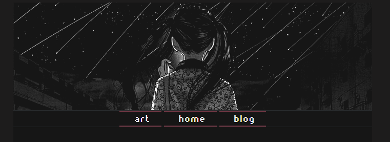

2023.04.15 - AI
I don't really have anything to write about right now, so I suppose I will just write about this site itself as a test with formatting and stuff. The point of this is how I used ChatGPT to help make this site, not that it's anything complex. AI stuff has been focused (negatively) on art, but I think it's cool that there are now tools which permit people to make anything they want, even if it's just a really basic little site.

This is what I asked for and recieved, it's super basic but it's a base to go off of. After this, I was able to take awhile to modify it and make
